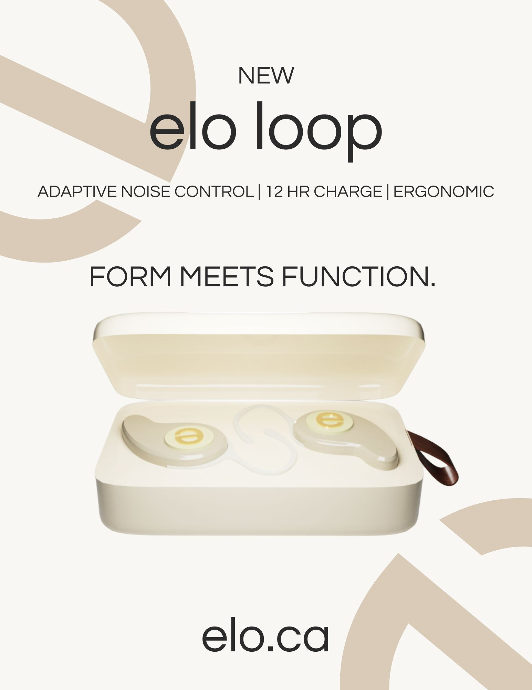
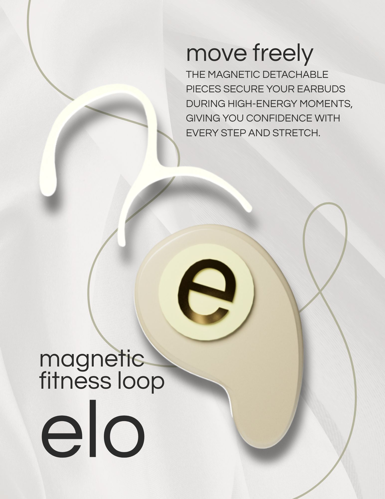
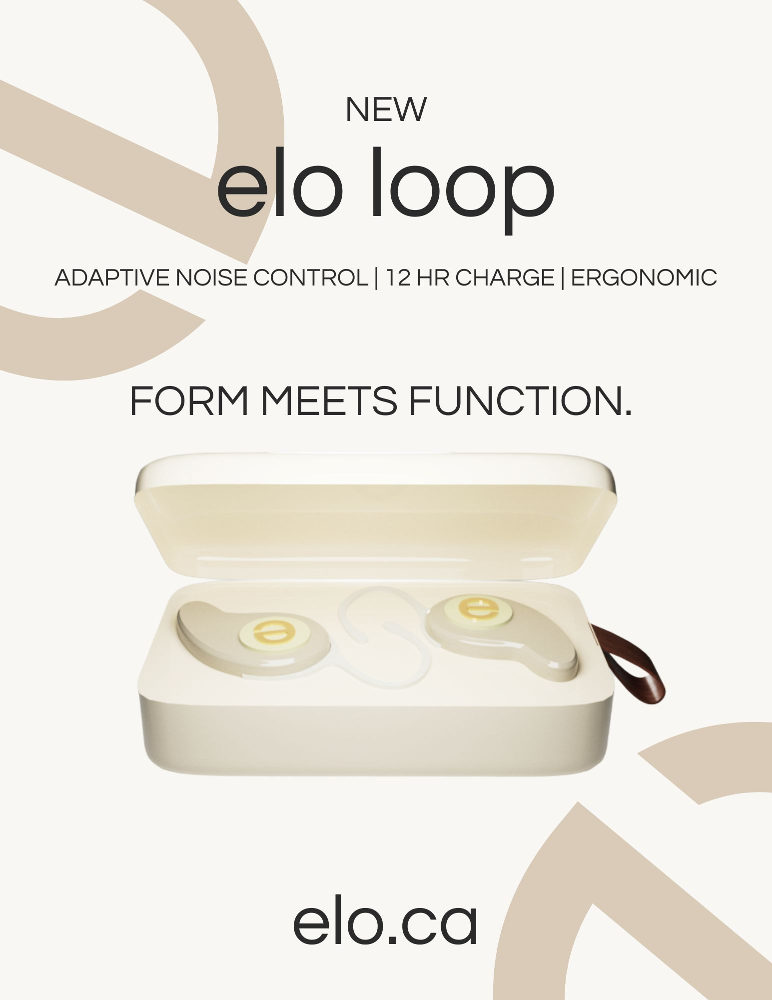
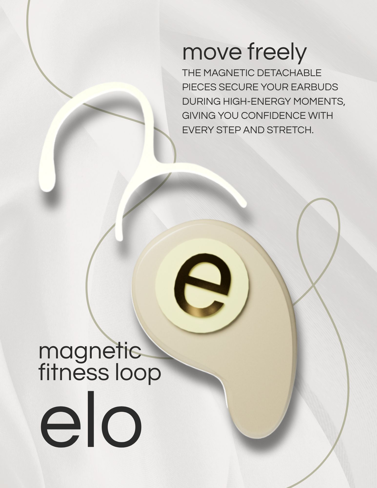

ELO LOOP EARBUDS
Designed for elegance, comfort, and superior sound — experience audio that moves with you.

Gold Plated Logo
A signature mark of elegance - this gold-plated emblem adds a touch of luxury while symbolizing exceptional craftsmanship.

Durable Plastic Casing
Built to last. The high-grade polymer shell protects your earbuds from daily wear, ensuring lasting performance and style.

Comfortable Silicone Ear Piece
Designed for all-day comfort. The soft, ergonomic silicone tips provide a secure fit and gentle seal for immersive listening.

Superior Sound Quality
Engineered for clarity and depth - experience rich bass, crisp highs, and perfectly balanced sound with every beat.
 


